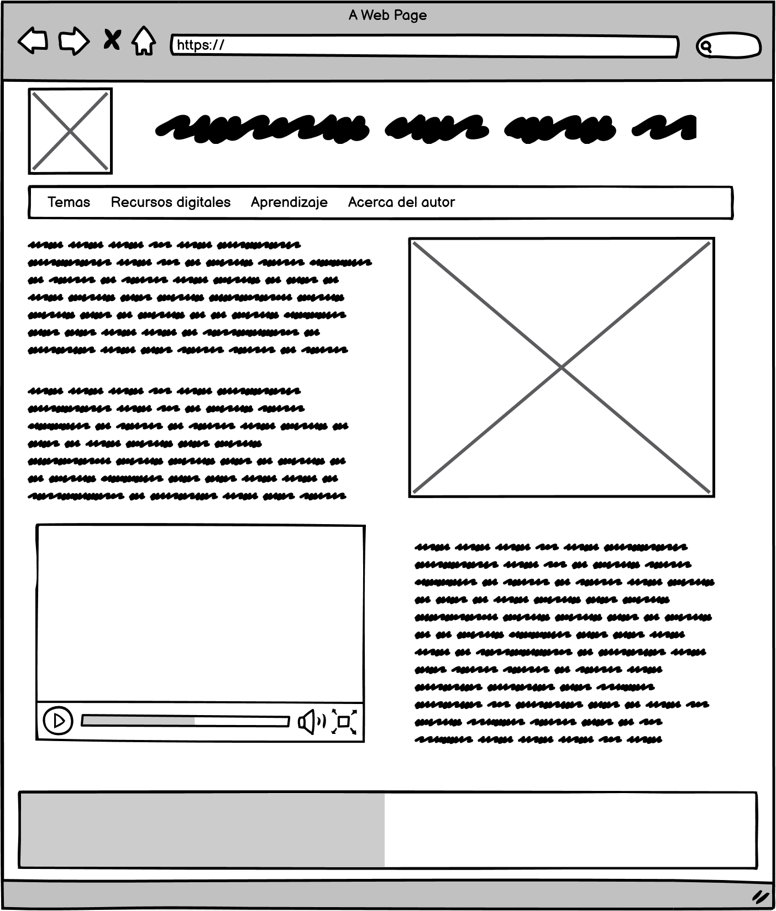

Hojas de estilo en cascada CSS
Las hojas de estilo en cascada o por sus siglas en ingles CSS (Cascading Style Sheets) es el lenguaje de estilos utilizado para describir la presentacion de documentos en HTML o XML. CSS se encarga de la descripcion del renderizado del elemento en pantalla, papel, habla o en otros medios.
CSS es la estructura que se encarga de la parte visual y de como luce una pagina web dirigida al publico, se les dise hojas en cascada ya que se puede tener varias hojas, una de ellas con las propiedades heredadas de otras hojas, en donde la estructura HTML es el contenido basico de las paginas.
Con CSS se puede crear una estructura de diseño el cual especifica la estetica de la pagina y se usa separado de los que configuran el contenido.
Santos, D. (2021, December 9). Introducción al CSS: qué es, para qué sirve y otras 10 preguntas frecuentes. Hubspot.es. https://blog.hubspot.es/marketing/que-es-css
Fremeworks CSS
Los frameworks se utilizan comunmente en el ambito de la programacion de aplicaciones, se ha ido implementando los frameworks para programar y diseñar aplicaciones web, es por esta razon que existen cantidades de frameworks para CSS.
Se considera un framework como un conjunto de herramientas, librerias, convenciones y buenas practicas que permiten encapsular tareas repetitivas en modulos genericos reutilizables.
Los framewoks mas completos incluyen utilidades funcionales, que evitan el trabajar en aspectos genericos del diseño web, de esta manera los framewoks mas completos incluyen herramientas que permitan:
Neutralizar los diseños implementados por defecto de los navegadores.
Manejar correctamente el texto, esto permite que todos los contenidos contengan exactamente los mismos parametros, y favorece la adaptabilidad mejorando su accesibilidad y el acceso a cualquier medio y/o dispositivo.
Dentro de tantos framewoks disponibles se podrian considerar los siguientes como de buena ejecucion:
Tailwind
Bootstrap
Foundation
Pure CSS
Bulma
CSS | MDN. (2022, 27 febrero). Mdn. https://developer.mozilla.org/es/docs/Web/CSS
Mockup del proyecto educativo
